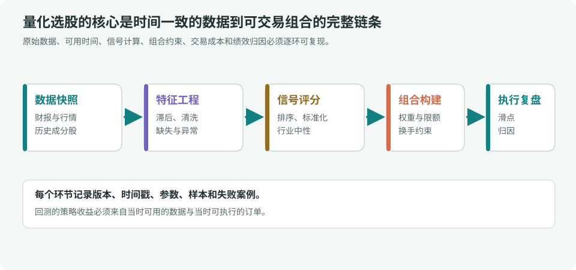
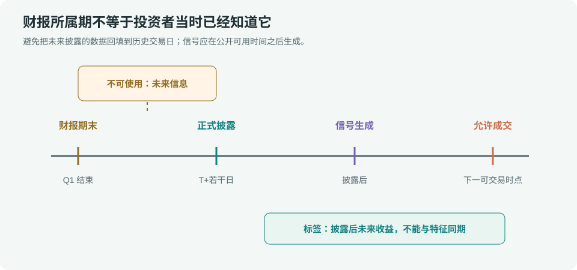
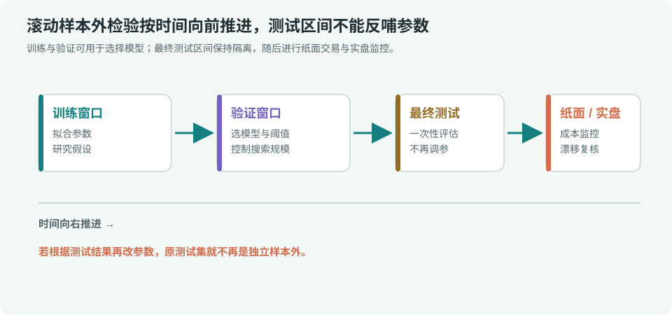

CHAPTER 19 · EVIDENCE-BASED INVESTING
量化选股：数据时点、回测与样本外检验
从Point-in-time数据和因子特征出发，构建可复现回测，处理交易成本、幸存者偏差、前视偏差与过拟合。
量化选股不是自动化预测，而是把研究假设写成可重复流程
量化选股把财务、价格、交易、行业与其他可用信息转成信号，再按明确规则形成股票排序与组合。它的优势是规则可重复、样本可比较、决策可审计；它的风险是数据时间戳错误、指标定义变化、样本选择偏差和模型对历史噪声过度拟合。
一条量化策略不是“因子分数高就买入”这么简单。必须把数据可用时间、证券池、特征处理、组合构建、交易执行和绩效归因连接起来。每一步都可能改变结果，也都需要单独留痕。

Point-in-time数据：财报所属期不等于市场当时已经知道
假设公司年报覆盖截至12月31日的财务状况，但直到次年3月才公开披露。若回测在1月就使用年报中的利润、净资产或现金流，会把未来信息泄漏到历史信号中。财务指标应按公开披露时间、数据供应商实际可用时间和必要的处理延迟构造。

证券池也必须是当时可投资的证券集合。只保留今天仍上市的公司会产生幸存者偏差；忽略退市、停牌、ST状态、公司行动与历史指数成分，会使策略看起来比真实可实施情况更好。
因子特征：先定义经济含义，再定义计算口径
常见信号包括估值（盈利收益率、账面市值比）、盈利质量（利润率、现金流质量）、成长（收入或利润变化）、动量（历史收益）、风险（波动率、杠杆）和投资行为（资本支出增长）。每个特征都需要固定分子、分母、报告期、复权口径、缺失值处理和可用时间。
跨公司比较前，通常对极端值进行温莎化或稳健处理，再按横截面均值和标准差转成Z分数。若行业结构差异很大，可在行业内标准化或回归剔除行业暴露；但中性化也会删除某些有经济含义的信号，因此要保留原始与处理后两套结果进行比较。
回测是模拟历史决策，不是把历史价格重播成确定成交
回测要定义信号计算时点、下单时点、订单类型、成交价格、交易量限制、持仓更新、现金余额、分红拆股、融资融券、交易费用和税费。用当日收盘价生成信号，却假设能以同一收盘价成交，可能构成前视偏差。停牌、涨跌停或没有足够成交量时，应让订单未成交或按明确规则处理。

Alpha与Beta：模型中的风险暴露与截距
在单因子市场模型中，组合超额收益可分解为市场暴露、模型截距与残差。Beta描述组合对市场超额收益变化的敏感度；Alpha是给定基准和模型后未被该模型解释的平均部分。它不是脱离模型定义的“纯技能”，也不是未来可以保证获得的收益。
Alpha的估计取决于基准、因子集合、样本区间、频率和标准误处理。若遗漏规模、价值、动量或行业暴露，截距可能吸收本应由其他因子解释的收益。研究报告应同时给出Beta、因子暴露、Alpha置信区间和净交易成本后的结果。
绩效评价：净收益、风险、换手与基准必须同时出现
常见统计量包括累计收益、年化收益、波动率、Sharpe、最大回撤、换手率、胜率、盈亏比、容量和基准超额收益。Sharpe是超额收益均值与波动率的比率，依赖频率、无风险利率、序列相关和收益分布；它不能单独描述尾部损失。比较策略时，必须统一币种、时间段、基准和费用口径。
过拟合：尝试越多参数，越容易把噪声误当成规律
研究者可能尝试数百个回看窗口、阈值、因子组合和再平衡周期，然后只公布最好的版本。即使真实市场没有可预测信号，反复试验也可能找到一个历史Sharpe异常高的策略。只做一次训练/测试划分不一定足够，因为研究者可能反复查看测试集并据此继续调参。
Bailey等人提出Probability of Backtest Overfitting（PBO）与组合对称交叉验证（CSCV）框架，用来研究样本内最优策略在样本外表现退化的概率。它是针对策略选择偏差的诊断框架，不是“未来亏损概率”，也不能代替真实时间顺序的滚动样本外验证。研究者还应披露尝试过的模型数量、被放弃的参数和研究者自由度。
从回测到实盘：差异监控比单次回测收益更重要
纸面交易阶段检查数据延迟、信号稳定性、订单拒绝、成交量、滑点与组合约束；实盘后持续比较预测持仓、实际持仓和基准暴露。若因子IC、换手、成交成本、行业暴露或回撤出现持续偏离，应触发调查，而不是立刻增加参数复杂度来“修复”曲线。
量化策略需要版本控制、数据快照、特征定义、交易日志、风险限额、模型负责人和停用机制。模型漂移、市场制度变化、供应商数据修订和容量耗尽都可能令过去有效的研究失效。
可复现的量化研究必须回答哪些问题？
检查题
- 财报所属期和公开披露日为什么必须分开？
- 幸存者偏差如何让股票池回测变得过于乐观？
- 为什么同一收盘价既生成信号又假设成交可能构成前视偏差？
- PBO衡量的是什么，又不代表什么？
- Sharpe提高但换手和冲击成本大幅上升，策略是否一定更好？
参考资料与适用范围
引用资料用于核对定义、理论或研究设计。学术研究的样本和市场范围不自动适用于其他市场；本章计算器和图表中的数值均为构造示例。